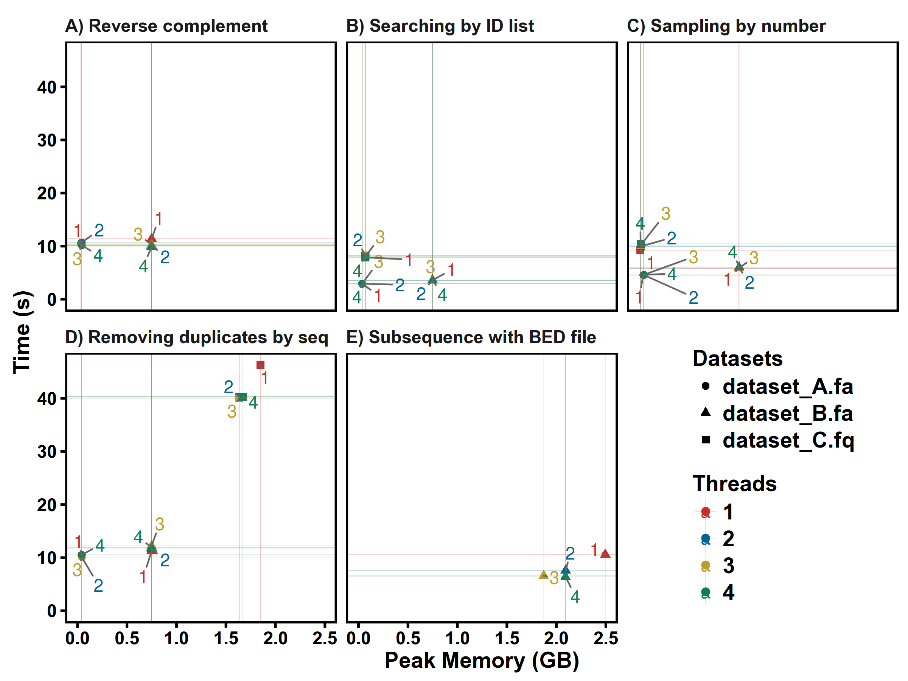
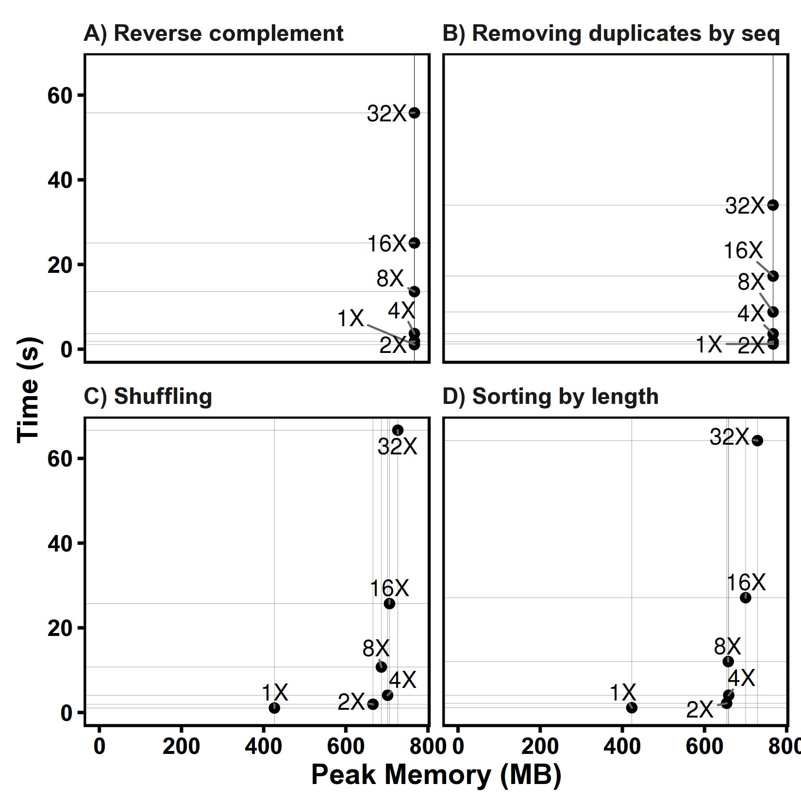

Benchmark
Softwares
- seqkit. (Go). Version v0.3.1.1. Compiled with Go 1.7rc5.
- fasta_utilities. (Perl). Version 3dcc0bc. Lots of dependencies to install.
- fastx_toolkit. (Perl). Version 0.0.13. Can't handle multi-line FASTA files.
- seqmagick. (Python). Version 0.6.1
- seqtk. (C). Version 1.1-r92-dirty.
Not used:
- pyfaidx. (Python). Version 0.4.7.1. Not used, because it exhausted my memory (10G) when computing reverse-complement on a 5GB fasta file of 250 bp.
A Python script memusg was used to compute running time and peak memory usage of a process.
Features
| Categories | Features | seqkit | fasta_utilities | fastx_toolkit | pyfaidx | seqmagick | seqtk |
|---|---|---|---|---|---|---|---|
| Formats support | Multi-line FASTA | Yes | Yes | -- | Yes | Yes | Yes |
| FASTQ | Yes | Yes | Yes | -- | Yes | Yes | |
| Multi-line FASTQ | Yes | Yes | -- | -- | Yes | Yes | |
| Validating sequences | Yes | -- | Yes | Yes | -- | -- | |
| Supporting RNA | Yes | Yes | -- | -- | Yes | Yes | |
| Functions | Searching by motifs | Yes | Yes | -- | -- | Yes | -- |
| Sampling | Yes | -- | -- | -- | Yes | Yes | |
| Extracting sub-sequence | Yes | Yes | -- | Yes | Yes | Yes | |
| Removing duplicates | Yes | -- | -- | -- | Partly | -- | |
| Splitting | Yes | Yes | -- | Partly | -- | -- | |
| Splitting by seq | Yes | -- | Yes | Yes | -- | -- | |
| Shuffling | Yes | -- | -- | -- | -- | -- | |
| Sorting | Yes | Yes | -- | -- | Yes | -- | |
| Locating motifs | Yes | -- | -- | -- | -- | -- | |
| Common sequences | Yes | -- | -- | -- | -- | -- | |
| Cleaning bases | Yes | Yes | Yes | Yes | -- | -- | |
| Transcription | Yes | Yes | Yes | Yes | Yes | Yes | |
| Translation | -- | Yes | Yes | Yes | Yes | -- | |
| Filtering by size | Indirect | Yes | -- | Yes | Yes | -- | |
| Renaming header | Yes | Yes | -- | -- | Yes | Yes | |
| Other features | Cross-platform | Yes | Partly | Partly | Yes | Yes | Yes |
| Reading STDIN | Yes | Yes | Yes | -- | Yes | Yes | |
| Reading gzipped file | Yes | Yes | -- | -- | Yes | Yes | |
| Writing gzip file | Yes | -- | -- | -- | Yes | -- |
Note 2: See usage for detailed options of seqkit.
Datasets
All test data is available here: seqkit-benchmark-data.tar.gz (2.2G)
dataset_A.fa - large number of short sequences
Dataset A is reference genomes DNA sequences of gastrointestinal tract from
NIH Human Microbiome Project:
Gastrointestinal_tract.nuc.fsa (FASTA format, ~2.7G).
dataset_B.fa - small number of large sequences
Dataset B is Human genome from ensembl.
- Genome DNA:
Homo_sapiens.GRCh38.dna_sm.primary_assembly.fa.gz(Gzipped FASTA file, ~900M) . Decompress it and rename to dataset_B.fa (~2.9G). - GTF file:
Homo_sapiens.GRCh38.84.gtf.gz(~44M) - BED file:
Homo_sapiens.GRCh38.84.bed.gzwas converted fromHomo_sapiens.GRCh38.84.gtf.gzbygtf2bedwith command$ zcat Homo_sapiens.GRCh38.84.gtf.gz | gtf2bed --do-not-sort | gzip -c > Homo_sapiens.GRCh38.84.bed.gz
dataset_C.fq – Illumina single end reads (SE100)
Dataset C is Illumina single end (SE 100bp) reads file (~2.2G).
Summary
$ seqkit stat *.fa
file format type num_seqs sum_len min_len avg_len max_len
dataset_A.fa FASTA DNA 67,748 2,807,643,808 56 41,442.5 5,976,145
dataset_B.fa FASTA DNA 194 3,099,750,718 970 15,978,096.5 248,956,422
dataset_C.fq FASTQ DNA 9,186,045 918,604,500 100 100 100
Sequence ID list
Parts of sequences IDs was sampled and shuffled from original data. They were used in test of extracting sequences by ID list.
Commands:
$ seqkit sample -p 0.3 dataset_A.fa | seqkit seq --name --only-id | shuf > ids_A.txt
$ seqkit sample -p 0.3 dataset_B.fa | seqkit seq --name --only-id | shuf > ids_B.txt
$ seqkit sample -p 0.03 dataset_C.fq | seqkit seq --name --only-id | shuf > ids_C.txt
Numbers:
$ wc -l ids*.txt
20138 ids_A.txt
58 ids_B.txt
2754516 ids_C.txt
BED file
Only BED data of chromosome 19 was used in test of subsequence with BED file:
$ zcat Homo_sapiens.GRCh38.84.bed.gz | grep -E "^19" | gzip -c > chr19.bed.gz
Platform
PC:
- CPU: Intel Core i5-3320M @ 2.60GHz, two cores/4 threads
- RAM: DDR3 1600MHz, 12GB
- SSD: SAMSUNG 850 EVO 250G, SATA-3
- OS: Fedora 24 (Scientific KDE spin), Kernal: 4.6.4-301.fc24.x86_64
Softwares:
- Perl: perl 5, version 22, subversion 2 (v5.22.2) built for x86_64-linux-thread-multi
- Python: Python 2.7.11 (default, Jul 10 2016, 20:58:20) [GCC 6.1.1 20160621 (Red Hat 6.1.1-3)] on linux2
Tests
Automatic benchmark and plotting scripts are available at: https://github.com/shenwei356/seqkit/tree/master/benchmark.
All tests were repeated 3 times, and average time and peak memory ware used for plotting.
All data were readed once before tests began to minimize the influence of page cache.
Output sequences of all softwares were not wrapped to fixed length.
Test 1. Reverse Complement
revcom_biogo (source,
binary ),
a tool written in Golang (compiled with Go 1.6.3) using biogo
(Version 7ebd71b)
package,
was also used for comparison of FASTA file parsing performance.
Note that some softwares (fasta_utilities and biogo) have different converting rules of computing complement sequence on ambiguous bases, there fore the results are different from others.
Test 2. Extracting sequences by ID list
Test 3. Sampling by number
Note that different softwares have different sampling strategies, the peak memory depends on size of sampled sequences and the results may not be the same.
Test 4. Removing duplicates by sequence content
Test 5. Subsequence with BED file
Results
seqkit version: v0.3.1.1
FASTA:

FASTQ:

Test of multiple threads:
From the results, 2 threads/CPU is enough, so the default threads of seqkit is 2.

Tests on different file sizes
Files are generated by replicating Human genome chr1 for N times.
